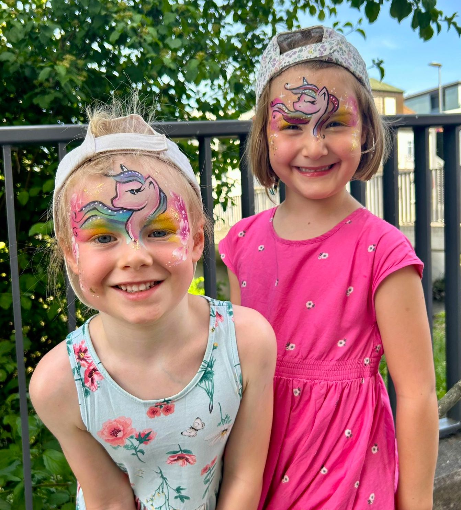
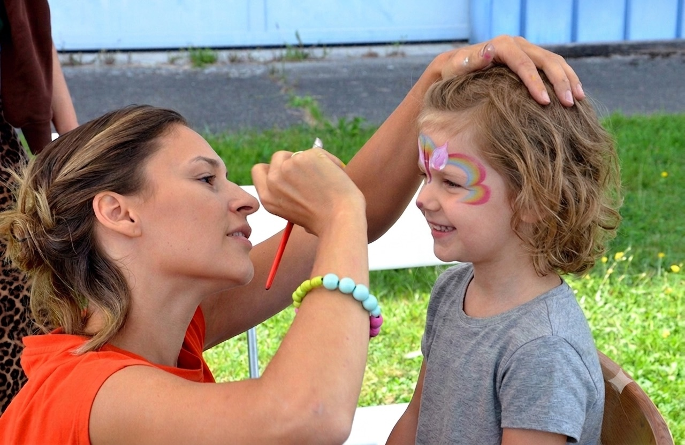
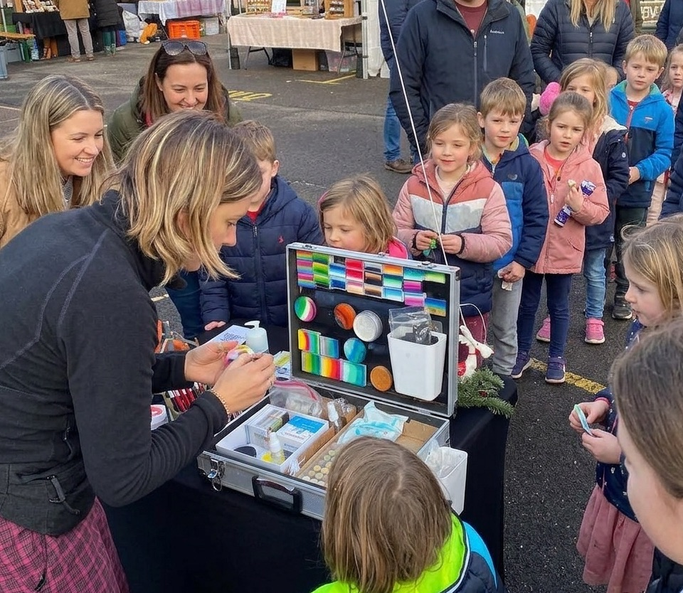
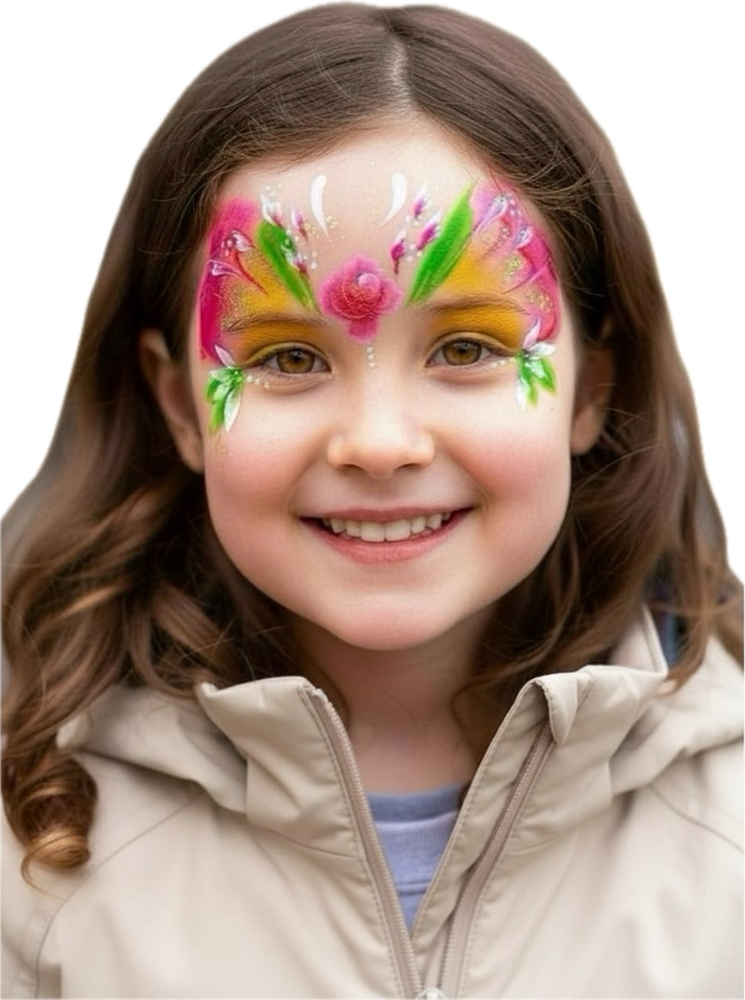
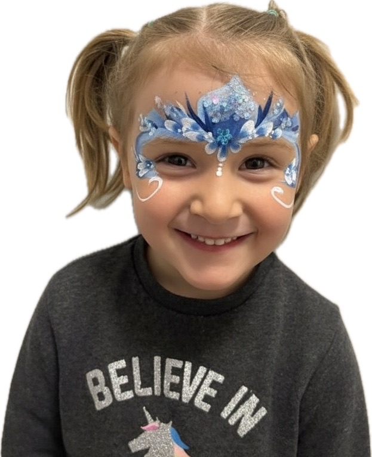
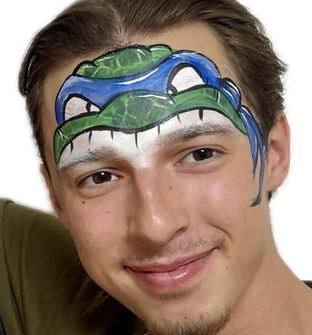
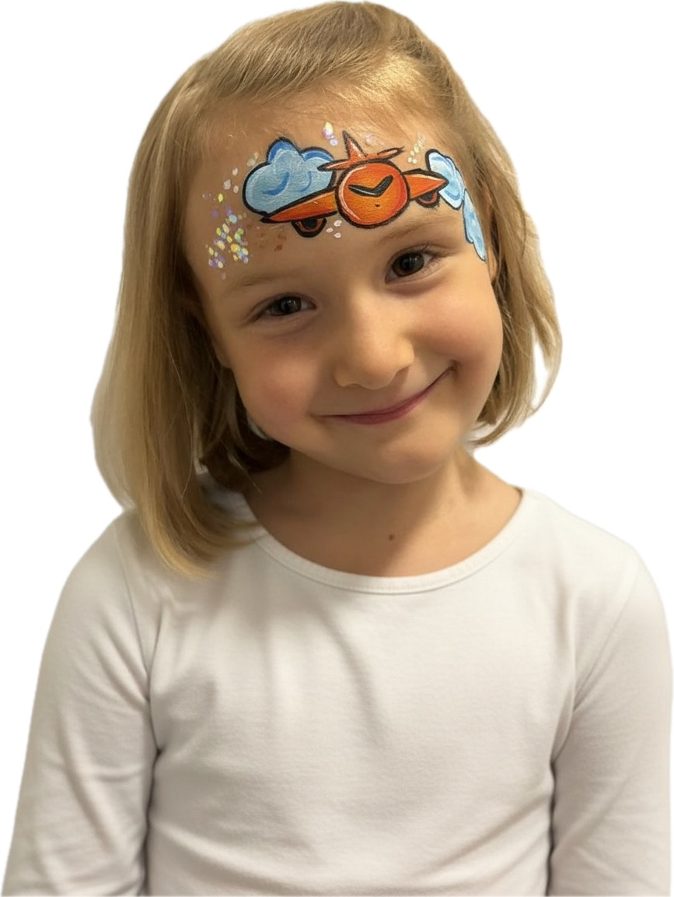
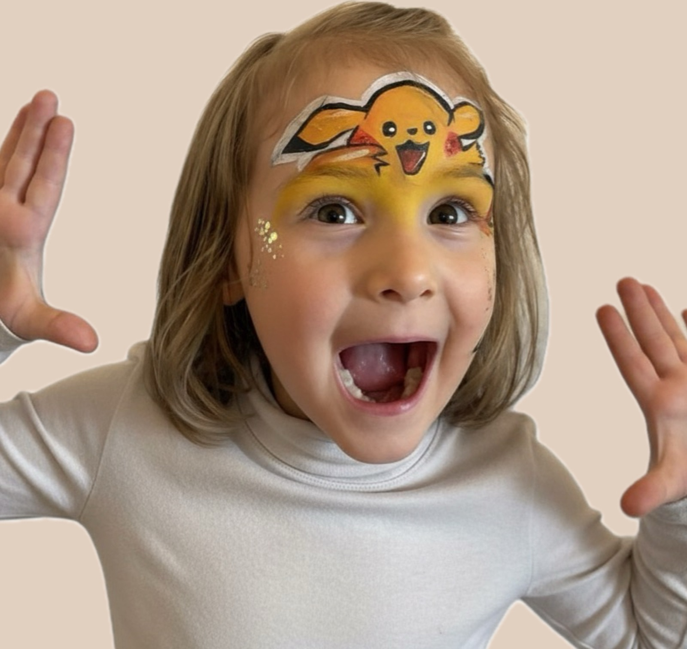
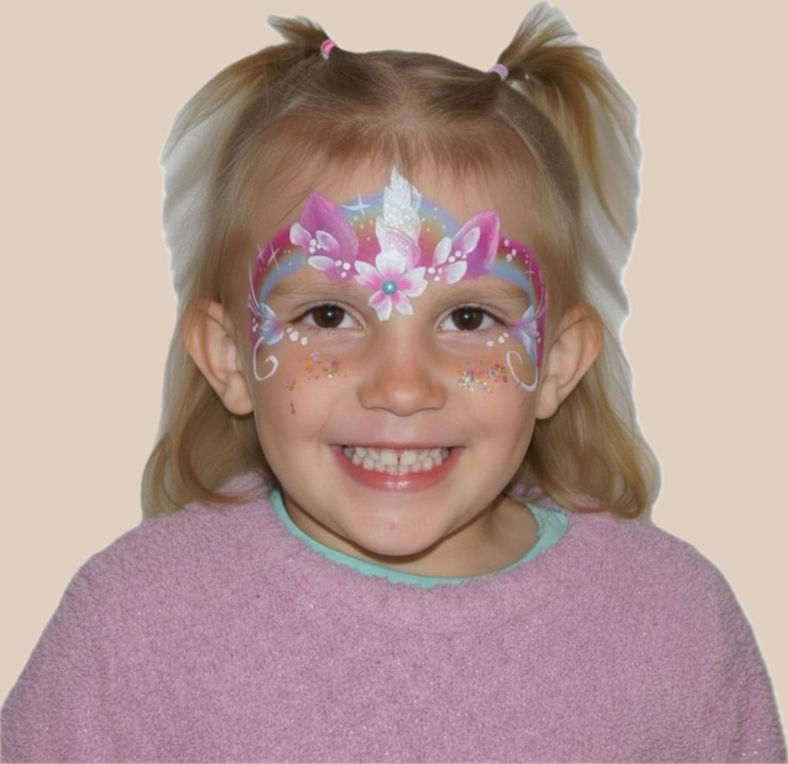

Für Kinder & Gross
Kinderschminken.
Magische Momente.
Einhörner, Superhelden, Tiger — jedes Motiv ein Unikat. Kinderschminken Zürich CHF 145/h, professionell und direkt bei eurem Event.

Einhörner
Live am Event
Grosser Andrang Feine Details
Feine Details
Kinderschminken — Magisch und Cool!
Das perfekte Highlight für euer nächstes Kinder- oder Familienevent. Egal ob Kindergeburtstag, Hochzeit, Sommerfest oder andere Anlässe — als professionelle Speed Painterin male ich alle Motive live auf eurem Event.
Dabei benötige ich nur wenig Platz (ca. 2×2 m), bringe alles selbst mit und bin in kürzester Zeit startklar. Das perfekte Highlight für Gross & Klein!

Schmetterling
Eiskönigin
Ninja Turtle
Flugzeug
Pikachu
EinhornJedes Motiv ein Unikat.
Mit oder ohne Thema — alle Motive sind super schnell gemalt und richten sich nach euren Wünschen und Anlässen. Bevor ich euch auf eurem Event besuche, planen wir gemeinsam die richtige Motivauswahl. Ihr dürft dabei ganz individuell entscheiden, wo der Fokus liegen soll.
Ihr könnt euch nicht entscheiden? Gar kein Problem! Gerne stelle ich euch eine „Best Of“-Auswahl zusammen und überrasche euch!
Kinderschminken XXL – perfekt für grosse Events
Plant ihr ein grösseres Event und möchtet euren kleinen Gästen ein besonderes Highlight bieten? Gerne berate ich euch persönlich und unkompliziert, ob eine Unterstützung durch weitere professionelle Kinderschminkerinnen für euer Event sinnvoll ist. Fragt einfach unverbindlich an!
Dank meiner langjährigen Erfahrung im Eventmanagement unterstütze ich euch nicht nur beim Kinderschminken, sondern stehe euch auch mit Rat und Tat bei der Planung zur Seite. Sollte bei eurem Anlass zusätzliche Unterstützung vor Ort benötigt werden, greife ich auf mein Netzwerk erfahrener und professioneller Kolleginnen zurück, die unkompliziert über mich dazugebucht werden können.
So habt ihr alles aus einer Hand, eine reibungslose Organisation und ein zauberhaftes Erlebnis für eure kleinen Gäste – auch bei grossen Veranstaltungen.
Alles dabei — sofort einsatzbereit
Ich habe alles dabei, was vor Ort gebraucht wird — Farben, Tisch, Stuhl und Materialien. Nach rund 10 Minuten Aufbau kann es losgehen, ob in Zürich, Dübendorf oder der ganzen Region.
Mein kompaktes Setup lässt sich flexibel an jeden Ort anpassen — auch ein Ortswechsel während der Feier ist kein Problem.
Vegan & Unbedenklich
Verwendet werden ausschliesslich hochwertige Farben, die absolut unbedenklich sind — und vegan. Weder tierische Produkte noch Tierversuche.
Sauberkeit und Sicherheit haben für mich oberste Priorität — wie ich vor Ort arbeite, steht transparent in meinem Hygienekonzept. Hygienekonzept ansehen →
Das spricht für Face Art Zürich
-
Strahlende Kinderaugen
Kinder lieben es — und das Lächeln danach ist Garant für ein rundes Event.
-
Erinnerungen mit Wow-Effekt
Ins Thema und Farbschema passend — damit die Fotos noch Jahre später strahlen.
-
Geringer Aufwand
Nur ein kleiner Tisch und ein Stuhl — ich passe mich den Gegebenheiten vor Ort an.
-
Wetterunabhängig
Hauptsache trocken. Umzug auch während des Events gar kein Problem.
-
Publikumsmagnet
Das Kinderschminken fasziniert alle Altersklassen — Gross und Klein.
Kinderschminken Zürich — die häufigsten Fragen
FAQ
Das hängt vom Event und vom Andrang ab. Einfache Motive sind in rund einer Minute fertig, aufwendigere brauchen bis zu sechs Minuten. Bei der Planung schätze ich gemeinsam mit euch ab, wie viele Kinder in eurem Zeitfenster realistisch sind — so lassen sich lange Wartezeiten vermeiden.
Ja — ich verwende ausschliesslich zertifizierte, dermatologisch getestete Schminkfarben, die speziell für die empfindliche Kinderhaut entwickelt wurden. Sie sind wasserlöslich und lassen sich einfach wieder abwaschen.
Das entscheide ich situativ gemeinsam mit dem Kind und den Eltern vor Ort — denn das Gesicht ist eine sehr persönliche Zone, und jedes Kind ist unterschiedlich weit. Fühlt sich ein Kind noch nicht bereit für ein Motiv im Gesicht, bemale ich stattdessen gerne den Arm oder das Bein. So kann es beim Malen zuschauen, mitentscheiden und sein Motiv danach selbst gut betrachten.
Ich komme zu euch in ganz Zürich und Umgebung — Dübendorf, Kloten, Uster, Winterthur, Rapperswil und weitere Orte. Bei grösserer Distanz einfach anfragen, ich finde gerne eine Lösung.
Ich benötige lediglich eine Fläche von rund 2 × 2 Metern. Tisch, einen Kinder-Hochstuhl, einen zusätzlichen Stuhl (etwa für Eltern oder für Erwachsenen-Motive) sowie das gesamte Material bringe ich selbst mit. Bei grösseren Events mit viel Andrang plant idealerweise etwas zusätzlichen Platz für eine Warteschlange ein.
Ich empfehle mindestens 2–4 Wochen im Voraus, besonders für Wochenendtermine. Kurzfristige Anfragen nehme ich aber gerne entgegen — bin ich noch frei, klappt es auch spontan. Ebenso freue ich mich über frühzeitige Anfragen im Rahmen der Jahresplanung: Solche Termine lassen sich unverbindlich reservieren, was die Planung erleichtert und euch die Sicherheit gibt, dass euer Wunschdatum noch verfügbar ist.
Kein Problem: Für grössere Events arbeite ich mit einem Netzwerk erfahrener Kolleginnen zusammen und organisiere zusätzliche Unterstützung unkompliziert aus einer Hand. Meldet euch gerne für eine persönliche, unverbindliche Beratung.
Kinderschminken für euer nächstes Event
Termin noch frei für euer Datum — jetzt unverbindlich anfragen, Antwort innerhalb von 24h.